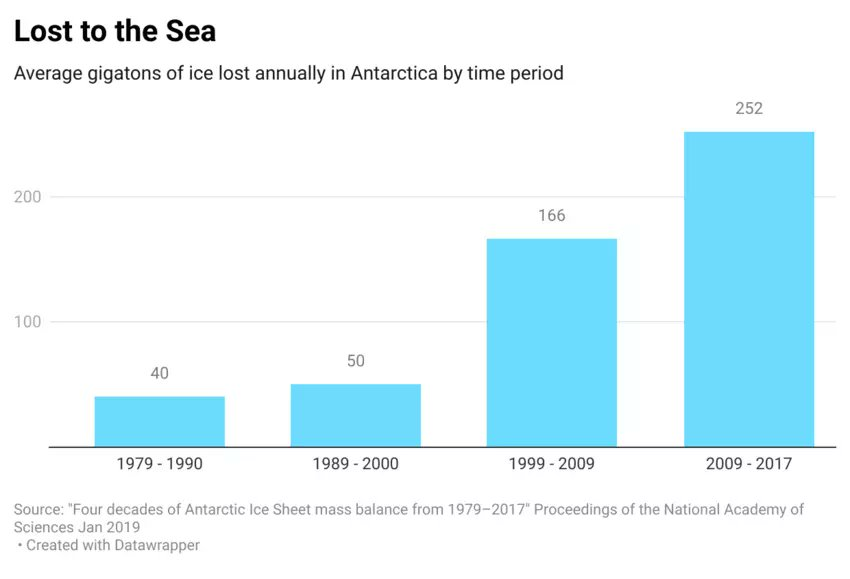
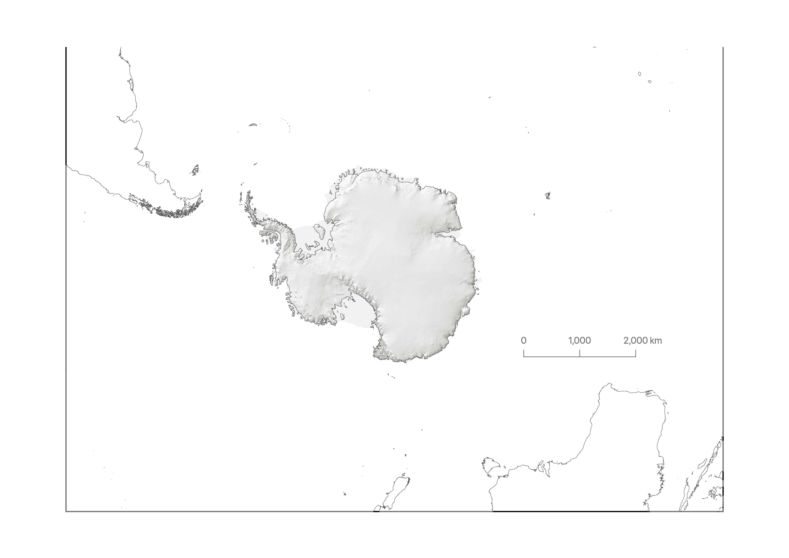
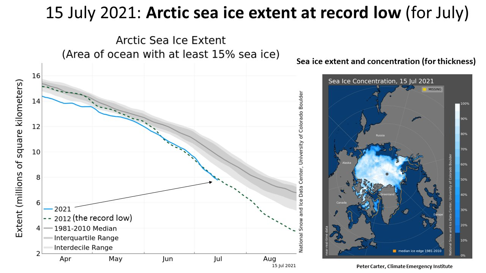

24 Ice Sheet
24.1 Greenland
Abstract Noel
Under anticipated future warming, the Greenland ice sheet (GrIS) will pass a threshold when meltwater runoff exceeds the accumulation of snow, resulting in a negative surface mass balance (SMB < 0) and sustained mass loss.
Here we dynamically and statistically downscale the outputs of an Earth system model to 1 km resolution to infer that a Greenland near‐surface atmospheric warming of 4.5 ± 0.3 °C—relative to pre‐industrial—is required for GrIS SMB to become persistently negative.
Climate models from CMIP5 and CMIP6 translate this regional temperature change to a global warming threshold of 2.7 ± 0.2 °C. Under a high‐end warming scenario, this threshold may be reached around 2055, while for a strong mitigation scenario it will likely not be passed. Depending on the emissions scenario taken, our method estimates a 6‐13 cm sea level rise from GrIS SMB in the year 2100.
Noel (2021) Greenland Ice Sheet Loss (pdf)
Boers Significance
It has been suggested that, in response to anthropogenic global warming, the Greenland Ice Sheet may reach a tipping point beyond which its current configuration would become unstable. A crucial nonlinear mechanism for the existence of this tipping point is the positive melt-elevation feedback: Melting reduces ice sheet height, exposing the ice sheet surface to warmer temperatures, which further accelerates melting. We reveal early-warning signals for a forthcoming critical transition from ice-core-derived height reconstructions and infer that the western Greenland Ice Sheet has been losing stability in response to rising temperatures. We show that the melt-elevation feedback is likely to be responsible for the observed destabilization. Our results suggest substantially enhanced melting in the near future.
Boers Abstract
The Greenland Ice Sheet (GrIS) is a potentially unstable component of the Earth system and may exhibit a critical transition under ongoing global warming. Mass reductions of the GrIS have substantial impacts on global sea level and the speed of the Atlantic Meridional Overturning Circulation, due to the additional freshwater caused by increased meltwater runoff into the northern Atlantic. The stability of the GrIS depends crucially on the positive melt-elevation feedback (MEF), by which melt rates increase as the overall ice sheet height decreases under rising temperatures. Melting rates across Greenland have accelerated nonlinearly in recent decades, and models predict a critical temperature threshold beyond which the current ice sheet state is not maintainable. Here, we investigate long-term melt rate and ice sheet height reconstructions from the central-western GrIS in combination with model simulations to quantify the stability of this part of the GrIS. We reveal significant early-warning signals (EWS) indicating that the central-western GrIS is close to a critical transition. By relating the statistical EWS to underlying physical processes, our results suggest that the MEF plays a dominant role in the observed, ongoing destabilization of the central-western GrIS. Our results suggest substantial further GrIS mass loss in the near future and call for urgent, observation-constrained stability assessments of other parts of the GrIS.
Boers (2021) Western Greenland Ice Sheet is close to a tipping point
24.2 Antarctica
Antarctica is larger than the US + Mexico and covered by an ice sheet several miles/km thick +80% of all global fresh water!).

24.2.1 Sea-level Rise from Antarctica
If it all melted, would raise global sea levels by 57 metres
DeConto Abstract
The Paris Agreement aims to limit global mean warming in the twenty-first century to less than 2 degrees Celsius above preindustrial levels, and to promote further efforts to limit warming to 1.5 degrees Celsius. The amount of greenhouse gas emissions in coming decades will be consequential for global mean sea level (GMSL) on century and longer timescales through a combination of ocean thermal expansion and loss of land ice. The Antarctic Ice Sheet (AIS) is Earth’s largest land ice reservoir (equivalent to 57.9 metres of GMSL), and its ice loss is accelerating4. Extensive regions of the AIS are grounded below sea level and susceptible to dynamical instabilities5,6,7,8 that are capable of producing very rapid retreat. Yet the potential for the implementation of the Paris Agreement temperature targets to slow or stop the onset of these instabilities has not been directly tested with physics-based models. Here we use an observationally calibrated ice sheet–shelf model to show that with global warming limited to 2 degrees Celsius or less, Antarctic ice loss will continue at a pace similar to today’s throughout the twenty-first century. However, scenarios more consistent with current policies (allowing 3 degrees Celsius of warming) give an abrupt jump in the pace of Antarctic ice loss after around 2060, contributing about 0.5 centimetres GMSL rise per year by 2100—an order of magnitude faster than today. More fossil-fuel-intensive scenarios result in even greater acceleration. Ice-sheet retreat initiated by the thinning and loss of buttressing ice shelves continues for centuries, regardless of bedrock and sea-level feedback mechanisms or geoengineered carbon dioxide reduction. These results demonstrate the possibility that rapid and unstoppable sea-level rise from Antarctica will be triggered if Paris Agreement targets are exceeded.
Abrupt Jump in Ice Loss around 2060
The world faces a situation where there is an “abrupt jump” in the pace of Antarctic ice loss around 2060.
The oceans would have to cool back down before the ice sheet could heal, which would take a very long time. On a societal timescale it would essentially be a permanent change.
This tipping point for Antarctica could be triggered by a global temperature rise of 3C (5.4F) above the preindustrial era feasible by 2100 under governments’ current policies.
These ice shelves won’t be able to just grow back.
Antarctica is being winnowed away by a warming atmosphere as well as the heating oceans, with warming seawater entering crevasses and gnawing away at “pinning points” that hold enormous bodies of ice to submerged bedrock. A rapid acceleration of melting could cause a cascading effect where huge amounts of ice and water flow uninterrupted into the Southern Ocean. Once in motion, the impacts from such dramatic ice loss would unfurl over centuries.
24.2.2 Thwaites
Voosen
An alarming crackup has begun at the foot of Antarctica’s vulnerable Thwaites Glacier, whose meltwater is already responsible for about 4% of global sea level rise. An ice sheet the size of Florida, Thwaites ends its slide into the ocean as a floating ledge of ice 45 kilometers wide. But now, this ice shelf, riven by newly detected fissures on its surface and underside, is likely to break apart in the next 5 years or so, scientists reported today at a meeting of the American Geophysical Union.

The Thwaites Eastern Ice Shelf (TEIS) buttresses one third of Thwaites Glacier. Removal of TEIS has the potential to increase the contribution of Thwaites Glacier to sea level rise by up to 25%. Recent research shows that the ice shelf is losing its grip on a submarine shoal that acts as a pinning point and the shear margin that separates TEIS from the Thwaites Glacier Tongue has extended, further weakening the TEIS connection to the pinning point. A sequence of Sentinel-1 radar imagery shows that parallel wing and comb cracks have recently formed rifts at high angles to the main shear margin and are propagating into the central part of the ice shelf at rates as high as 2km per year. We use satellite data, ground-penetrating radar, and GPS measurements to suggest that final collapse of Thwaites Glacier’s last remaining ice shelf may be initiated by intersection of rifts with hidden basal crevasse zones within as little as 5 years.
The central part of TEIS has no obvious surface crevasses and smooth surface topography, except for the surface expression of a pronounced basal channel aligned parallel to ice flow. Despite this smooth surface, ground-penetrating radar shows a weak zone of thin ice and complex basal topography, including numerous basal crevasses, that is not in local hydrostatic equilibrium. This local disequilibrium suggests the presence of elevated vertical shear stresses that further weaken this critical part of the ice shelf. GPS stake network observations show no measurable regional strain in the horizontal plane because large-scale flow is being accommodated by the lateral shear margin.
In the near future, the propagating rifts are likely to intersect this weak zone, triggering rifting along the basal crevasses and, subsequently, along the basal channel and a into secondary set of basal crevasses on the eastern side of the basal channel. This ``zigzag’’ rift sequence would disconnect the main flow from the influence of the pinning point (and compressive arches) and will ultimately lead to a complete disintegration of the ice shelf.
Voosen (2021) Ice shelf holding back keystone Antarctic glacier within years of failure
24.3 Arctic Sea Ice
ARCTIC SEA ICE AT RECORD LOW for this time of year. This is an enormous source of amplifying feedback. Losing the remaining Arctic sea ice and its reflection of solar energy back to space would be equivalent to another one trillion tons of CO2.
